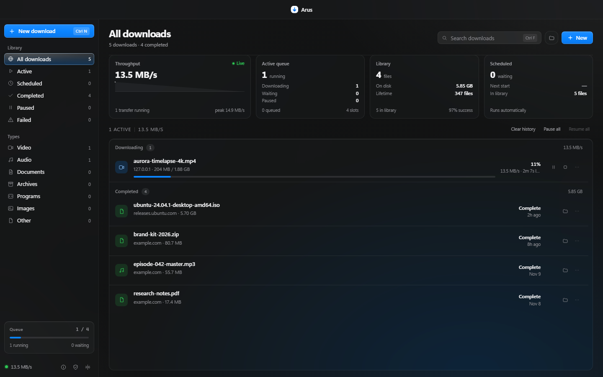
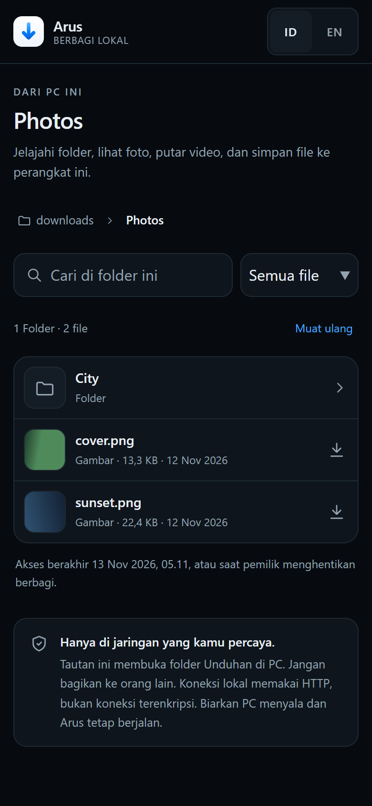

-
Berbagi folder lewat Wi-Fi lokal
Pindai QR dari Share to a device. Perangkat lain membuka folder Downloads di browser, bisa masuk ke subfolder, melihat foto, memutar video, dan menyimpan file ke perangkat itu.
-
Masa akses dan kata sandi
Pilih akses 1 jam, 8 jam, 24 jam, atau tanpa batas. Tambahkan kata sandi saat jaringan dipakai bersama, lalu hentikan berbagi kapan saja dari PC.
-
Installer dan ikon yang konsisten
Ikon aplikasi, header, dan sidebar installer sekarang memakai mark Arus yang sama dengan aplikasi dan situs. Versi baru juga muncul sekali sebagai notifikasi di dalam aplikasi.
Download managerWindows 10/11 · 64-bit
File besar, tanpa bikin PC berat.
Arus memecah file menjadi beberapa bagian, mengunduhnya bersamaan, lalu menulis langsung ke disk. Installer cukup 4,1 MB karena antarmuka memakai WebView2 yang sudah ada di Windows.

Tangkapan layar asli. Data di dalamnya hanya contoh.
- Unduhan installer
- —
- Installer
- 4,1 MB
- RAM idle
- ±19 MB
- Koneksi paralel
- 1–32
- Telemetri
- Tidak ada
- Lisensi
- MIT
Apa yang baru
Arus 1.1.0: Downloads jadi drive bersama.
Rilis 12 November 2026. Buka satu tautan dari HP atau laptop yang terhubung ke Wi-Fi yang sama, lalu jelajahi folder unduhan seperti penyimpanan jaringan.

Di balik satu unduhan
Satu bagian lambat.
Yang lain tetap jalan.
Empat koneksi mengambil bagian berbeda dari file yang sama. Setiap bagian langsung ditulis ke posisinya di disk, tanpa menunggu koneksi lain.
Selesai. Semua bagian sudah ditulis ke disk.
Ditulis ke disk256 / 256 MB
Butuh dukungan range request. Kecepatan nyata bergantung pada server dan jaringan, bukan hanya jumlah koneksi.
Ringan
Kenapa Arus tetap kecil.
Banyak aplikasi desktop membawa Chromium sendiri agar tampilannya seragam. Arus memakai WebView2 yang sudah terpasang di Windows, jadi tidak perlu browser kedua. Engine Rust menangani koneksi dan penulisan file di belakangnya.
Memakai WebView2 milik Windows
Electron mengemas Chromium dan Node ke dalam aplikasinya. Arus hanya memakai WebView2 yang sudah ada, sehingga installer dan pemakaian memori jauh lebih kecil.
Engine terpisah di Rust
Koneksi paralel, antrean, dan penulisan file dijalankan oleh proses Rust. UI hanya mengirim perintah dan menampilkan progres.
Menulis langsung ke disk
Data ditulis sambil diunduh, bukan ditampung di RAM. Mengunduh file ISO 5 GB tidak membuat pemakaian memori ikut naik.
Tenang saat tidak dipakai
Saat tidak ada unduhan, Arus hanya menunggu di tray. CPU hampir nol, dan popup hanya muncul untuk unduhan yang sedang berjalan.
UI
WebView2 bawaan Windows
Antarmuka web ringan
Engine
Rust + axum
Segmen, antrean, HLS/DASH, hash
I/O
Streaming ke disk
Ditulis bertahap, RAM tidak membengkak
Tidak membawa bundel Chromium
Angka pembanding.
Angka Arus diukur di Windows 11 64-bit. Kolom lain adalah kisaran umum aplikasi sejenis, bukan benchmark resmi.
| Aspek | Arus | Aplikasi Electron | Browser |
|---|---|---|---|
| Runtime | Rust + WebView2 | Chromium + Node | Chromium |
| RAM idle | ±19 MB | 150–300 MB | 300 MB ke atas |
| Telemetri | Tidak ada | Bervariasi | Umumnya ada |
| Multikoneksi | Ya, 1–32 | Umumnya ya | Tidak |
| Jadwal dan prioritas | Ya | Sebagian | Tidak |
| Verifikasi SHA-256 | Ya | Jarang | Tidak |
| Open source | MIT | Bervariasi | Sebagian |
Kapan berguna
Tiga situasi yang paling sering.
Kalau salah satunya terdengar familiar, bagian ini menjelaskan apa yang Arus lakukan di situasi tersebut.
ISO, installer game, arsip dataset.
Unduhan besar yang putus di tengah jalan paling menyakitkan. Arus memecah file, mengunduh bagiannya bersamaan, lalu melanjutkan dari bagian terakhir selama server mendukung range request.
Rapat tetap lancar.
Batasi kecepatan total atau hanya untuk unduhan tertentu, dan tentukan berapa unduhan yang boleh berjalan bersamaan. Bandwidth tidak lagi dihabiskan satu antrean panjang.
Tahu persis isinya tidak berubah.
Setelah selesai, Arus menghitung SHA-256 file. Cocokkan dengan nilai dari sumber sebelum file dipakai, dipasang, atau dibagikan ke orang lain.
Fitur
Yang dipakai setiap hari.
Bukan daftar fitur untuk halaman promosi. Ini yang muncul saat kamu benar-benar mengunduh file besar.
-
Satu file, banyak koneksi
Kalau server mendukung range request, file dipecah dan diunduh bersamaan. Satu koneksi yang lambat tidak menahan bagian lain.
1–32 koneksi · range request -
HLS dan DASH
Arus membaca manifest HLS atau DASH, mengunduh segmennya, lalu menggabungkannya dengan ffmpeg yang sudah terpasang.
Butuh ffmpeg -
Jadwal dan antrean
Tentukan jam mulai, batasi unduhan yang berjalan bersamaan, dan atur urutannya.
Jam mulai · batas antrean -
Batas kecepatan
Atur batas per unduhan atau untuk semuanya. Berguna saat rapat atau saat jaringan dipakai bersama.
Global atau per file -
Verifikasi SHA-256
Arus menghitung hash setelah file selesai, supaya bisa kamu cocokkan dengan nilai dari sumbernya.
a3f1…9c2eSetelah unduhan selesai -
Ekstensi browser dan clipboard
Ekstensi Chrome dan Edge menangkap tautan unduhan. Panduan pemasangan muncul sekali saat Arus pertama dibuka; kalau dilewati, cukup salin URL dan Arus menawarkannya.
Chrome · Edge · clipboard -
Popup progres yang singkat
Popup di pojok muncul saat unduhan berjalan atau selesai, lalu menutup sendiri. Bisa diatur di preferensi notifikasi.
Tutup otomatis -
Folder Downloads di perangkat lain
Bagikan folder unduhan lewat Wi-Fi lokal. HP atau laptop membuka tautan, menelusuri subfolder, melihat foto, memutar video, dan menyimpan file tanpa mengunggahnya ke internet.
Masa akses · kata sandi opsional
Panduan
Dari installer sampai unduhan pertama.
Tiga tahap, sekitar tiga menit. Ekstensi hanya perlu dipasang sekali per browser; setelah itu Arus menerima tautan dari halaman yang kamu buka.
Pasang aplikasi
±1 menit- Tekan Unduh untuk Windows di halaman ini. Installer
Arus_1.1.0_x64-setup.exeberukuran sekitar 4,1 MB. - Jalankan installer. Karena belum ditandatangani, Windows SmartScreen bisa meminta konfirmasi: pilih More info, lalu Run anyway.
- Ikuti proses pemasangan. Setelah selesai, Arus terbuka dan tetap tersedia di tray meski jendelanya ditutup.
- Panduan ekstensi muncul sekali setelah setup. Kamu bisa mengikutinya langsung, atau menutupnya dan membuka Pengaturan → Tangkapan browser kapan saja.
Sambungkan browser
±2 menit- Di Arus, buka Pengaturan → Tangkapan browser. Status di sana menunjukkan apakah ekstensi sudah terdeteksi.
- Klik Buka folder. Folder
extensionsudah menyertai aplikasi, jadi tidak ada file terpisah yang perlu diunduh. - Klik Buka halaman ekstensi. Kalau Chrome atau Edge menampilkan pemilihan profil, pilih profil yang biasa dipakai lalu buka
chrome://extensions. Di Edge, alamatnyaedge://extensions. - Aktifkan Developer mode di pojok kanan atas, pilih Load unpacked, lalu arahkan ke folder
extensiontadi. - Kembali ke Arus. Status berubah menjadi Ekstensi tersambung. Kalau belum, tekan tombol periksa sekali lagi.
Chrome dan Edge tidak mengizinkan pemasangan senyap, jadi langkah ini memang manual. Cukup sekali per browser. Saat Arus diperbarui, klik Reload di halaman ekstensi.
Unduh pertama
±30 detikCtrl Nmembuka unduhan baru. Tempel URL, lalu pilih folder simpan.- Atur jumlah koneksi 1–32 dan batas kecepatan bila perlu. Untuk file biasa, pengaturan awal sudah cukup.
- Untuk video atau audio, klik tombol ekstensi Unduh dengan Arus, atau arahkan kursor ke media dan tekan
Alt Shift A. - Menyalin URL juga cukup: Arus menawarkan tautan yang ada di clipboard. Ekstensi dan clipboard sama-sama membutuhkan Arus yang sedang berjalan.
- Pantau antrean. Jeda dan Lanjutkan bekerja selama server mendukung range request, jadi unduhan tidak mengulang dari nol.
- Setelah selesai, Arus menghitung SHA-256 dan menampilkan popup singkat. Buka folder dari baris unduhan, atau cocokkan hash dengan nilai dari sumber.
HLS dan DASH memerlukan ffmpeg untuk menggabungkan segmen. Pintasan lain: Ctrl F mencari di antrean, Ctrl , membuka pengaturan.
Batas
Yang tidak Arus lakukan.
Batas ini disengaja. Kalau salah satunya justru yang kamu cari, lebih baik tahu sekarang.
Stream berproteksi
Tidak ada unduhan dari YouTube atau situs yang memproteksi kontennya. Fitur seperti itu melanggar ketentuan platform dan tidak akan ditambahkan.
Telemetri otomatis
Tidak ada laporan pemakaian yang dikirim diam-diam. Arus hanya terhubung keluar saat mengunduh, mengecek rilis, atau saat kamu mengirim laporan bug sendiri.
Akun dan iklan
Tidak perlu mendaftar, tidak ada iklan, dan tidak ada fitur yang dikunci di balik pembayaran. Dukungan QRIS sepenuhnya opsional.
Komunitas
Dikembangkan terbuka.
Kode, rilis, dan diskusi ada di tempat terbuka. Laporkan bug di GitHub, atau mampir ke Discord kalau ingin bertanya.
Dukungan
Arus gratis. Kalau berguna, boleh traktir kopi.
Arus tidak punya iklan, langganan, atau fitur berbayar. Kalau kamu ingin mendukung pengembangan berikutnya, bisa lewat QRIS dengan nominal bebas.
Pembayaran diproses oleh aplikasi bank atau e-wallet kamu. Arus tidak melihat data pembayaran.
QRIS · XINET
FAQ
Pertanyaan yang sering muncul.
Apakah Arus benar-benar gratis?
Ya. Lisensinya MIT, jadi kamu bisa memakai, mengubah, dan membagikannya. Tidak ada iklan atau fitur berbayar. Dukungan QRIS sifatnya opsional.
Apakah ekstensi browser otomatis terpasang?
Chrome dan Edge tidak mengizinkan pemasangan senyap. Karena itu Arus menampilkan panduan sekali saat pertama dibuka: buka halaman ekstensi, aktifkan Developer mode, pilih Load unpacked, lalu arahkan ke folder ekstensi. Setelah itu browser mengingatnya. Langkah ini opsional.
Apakah popup dukungan muncul terus?
Tidak. Di aplikasi, tawaran dukungan hanya muncul sekali setelah setup selesai. Setelah itu bisa dibuka dari tombol Support Arus. Di website, popup hanya muncul setelah kamu menekan tombol unduh.
Apakah Arus mengecek versi terbaru?
Bisa. Setelah dibuka, Arus dapat bertanya ke GitHub apakah ada rilis lebih baru. Pengecekan ini bisa dimatikan di Behaviour. Kalau ada versi baru, Arus menampilkan tombol untuk membuka halaman unduhan.
Bagaimana cara melaporkan bug?
Buka Settings, lalu About, dan pilih Report a bug. Tulis apa yang terjadi dan tekan Send. Arus melampirkan versi aplikasi, versi Windows, ringkasan pengaturan, dan log error terakhir. Link unduhan, path folder, dan token URL dibersihkan dulu. Laporan masuk ke server arus.xinet.id dan hanya bisa dibaca pemilik. Tidak ada laporan yang terkirim otomatis.
Kenapa YouTube dan situs berproteksi tidak didukung?
Arus tidak mengambil stream dari situs yang memproteksi kontennya. Fitur seperti itu melanggar ketentuan platform, jadi tidak akan ditambahkan. Gunakan Arus untuk file yang memang boleh kamu unduh.
Apakah perlu memasang ffmpeg?
Hanya untuk HLS dan DASH. Arus mendeteksi ffmpeg yang sudah terpasang dan memakainya untuk menggabungkan segmen. Unduhan file biasa tidak memerlukan ffmpeg.
Data saya dikirim ke mana?
Arus tidak memiliki telemetri otomatis. Riwayat unduhan, pengaturan, dan statistik tersimpan lokal di folder data aplikasi di PC-mu. Koneksi keluar hanya terjadi saat mengunduh, memindai halaman, mengecek rilis ke GitHub, dan saat kamu sendiri mengirim laporan bug. Pengecekan rilis bisa dimatikan.
Apakah unduhan bisa dilanjutkan?
Ya, selama server sumber mendukung range request. Arus melanjutkan dari bagian yang belum selesai, bukan mengulang dari awal.
Windows versi apa yang didukung?
Windows 10 dan 11 64-bit dengan WebView2. WebView2 umumnya sudah terpasang di Windows modern, dan installer dapat memasangnya jika belum ada.
Kenapa ada popup setelah saya menekan unduh?
Itu tawaran dukungan yang muncul setelah unduhan dimulai. Sifatnya opsional. Tutup dengan tombol Selesai atau Esc; unduhan tetap berjalan.
Unduh
Pasang Arus, lalu biarkan ia bekerja.
Installer 4,1 MB untuk Windows 10/11 64-bit. Panduan ekstensi muncul sekali setelah dibuka. Tidak ada akun, tidak ada iklan.